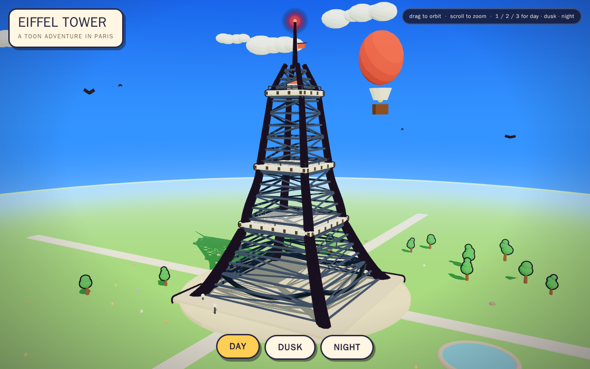

Inkling 2 Mini
oQ4emlx-community oQ4e + DSpark MTP draft (oMLX oQ)omlx 0.8.1 · M3 Ultra
Tasks run1
Working results1 of 1
Attempts1
Generated tokens167.3K
Energy79 Wh
Results
Every attempt, newest first per task. Faded rows are earlier attempts that were retried.
| Task | Run ended · judged page | Generated | Reasoning | Model calls | Tool errors | Energy | Wall | |
|---|---|---|---|---|---|---|---|---|
 |
Eiffel Tower 1 of 1 |
agent finished 1 canvas · 0 missing files · 0 page errors |
167.3K | 102.5K | 110 | 0 | 78.93 Wh | 2 h 1 min |
* Reasoning estimated from the raw stream where the engine reports one combined count. Wall time depends on hardware and is not ranked.
Pack and engine
- Model
- Inkling 2 Mini
- Quant
- oQ4e
- Pack
- mlx-community/Inkling-2-Mini-oQ4e-mtp · mlx-community oQ4e + DSpark MTP draft (oMLX oQ)
- Revision
- 3eea042751cd296b7266628a8342c1749242e1fe
- Size on disk
- 16.9 GB
- Engine
- omlx 0.8.1
- Engine settings
- speculative=MTP (bundled DSpark draft), context=262144, max_concurrent_requests=8, settings=temperature 1.0 (the pack's generation_config; no top_p/top_k advice, so top_p 1.0, top_k off, min_p 0), effort high, MTP, chunked prefill, aggressive burst decode, trial_isolation=exclusive GPU; verified CPA DigitalOcean fallback
- Hardware
- M3 Ultra 60c / 256 GB
- Request
- {"reasoning_effort": "high"}
- Reasoning effort
- high
- Thinking budget
- Not explicitly recorded; engine/provider default unknown
- Output limit
- 65.5K tokens per response, including reasoning